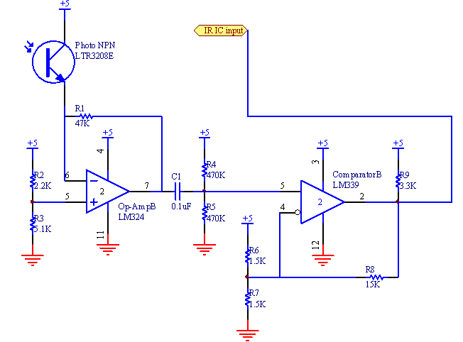

We used a trans-resistive circuit with a comparator to sense the IR emitted from the beacon. We have the following equation:
Since iC(ON) was at minimum 1mA for our phototransistor and our Vref was at max 5V,
But with those values, we noticed our signal was too small when attempting to sense the IR from a far distance. If we increased R1, we got more gain from the circuit, but if it was too high, our signal was saturated when we tried to sense the IR from a close distance. After hand tuning, we found 47K to be a good value for R1.
We then set the reference voltage to the following in order to keep our signal from saturating:
The signal coming from the output of the IR had a high value of 3.54V and a low value of 3.36. So for our comparator with hysteresis, we used the following equations for the resistor values: